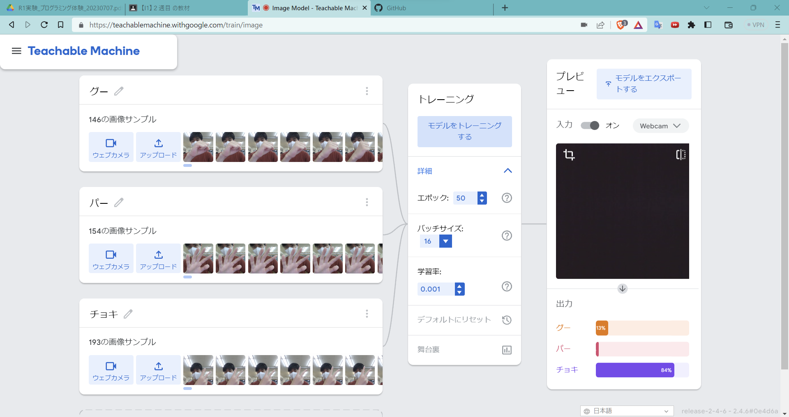
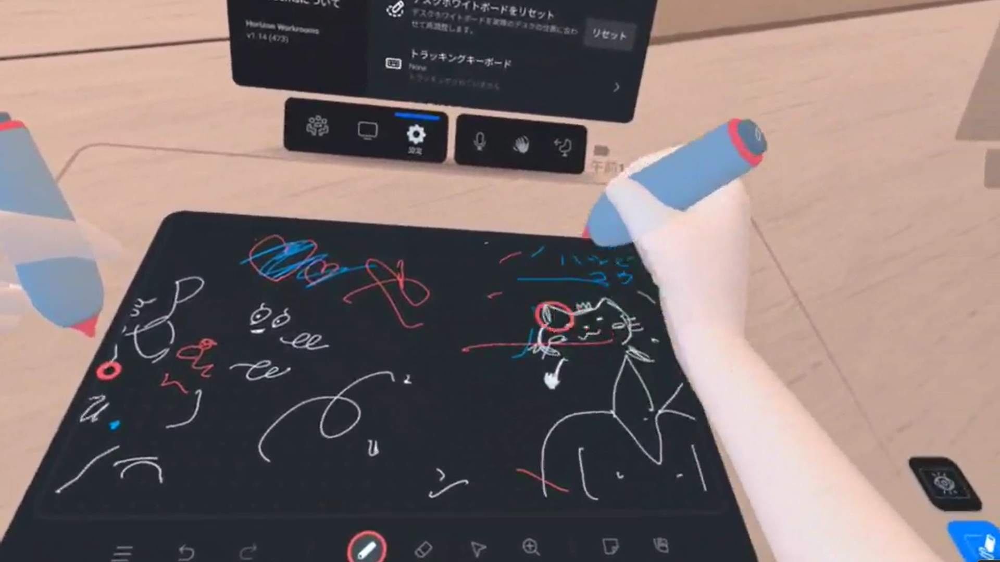

第2週目
2-1 １週目のレポートをHTMLで作る
１週目のレポート
1.内容
Githubにてhtmlファイルを編集する
2.感想
htmlファイルは普段見ないので新鮮だった．
2-2 機械学習体験

1.内容
AIにパーとグーの画像を認識させ機械学習をさせ，どれがグーでどれがパーかを判断させる．
2.感想
AIが機械学習をする仕組みが理解できた．大量の画像データを認識させ，
AIにどれがパーでどれがグーかを判断させれた．機械学習についてもっと学びたいと思った．
2-3 VR（バーチャルリアリティー：Virtual Reality）会議室の体験

1.内容
VRゴーグルをかぶってVR上の黒板に文字を書いたりする．
2.感想
VRは初めてで，実際にそこにものがあるかのように見えて驚いた．
自分が持っている
コントローラーもVR上に表示され，また腕を振るとVR上でも腕をふっていた．
文字も書くこと
ができた．